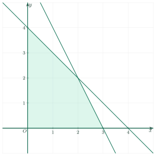
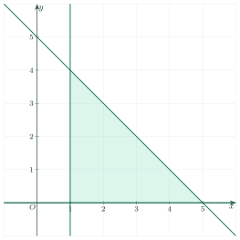

Systems of Linear Inequalities in Two VariablesHệ bất phương trình bậc nhất hai ẩn
Grade 10 · Topic: Linear Inequalities in Two VariablesLớp 10 · Chủ đề: Bất phương trình bậc nhất hai ẩn
1Lesson IntroductionGiới thiệu bài học
Learning goalsMục tiêu bài học
By the end of this lesson you can:
Sau bài học này, em có thể:
recognise a system of linear inequalities and check a solution;
nhận biết hệ bất phương trình bậc nhất hai ẩn và kiểm tra nghiệm của hệ;
draw the solution region of a system and find its vertices;
biểu diễn miền nghiệm của hệ bằng đồ thị và tìm các đỉnh của miền nghiệm;
find the largest or smallest value of \(F=px+qy\) on a region;
tìm giá trị lớn nhất / nhỏ nhất của biểu thức mục tiêu \(F=px+qy\) trên một miền;
solve a simple optimisation word problem.
giải bài toán tối ưu thực tế đơn giản.
2Mathematical VocabularyTừ vựng Toán học
system of inequalities – several linear inequalities in \(x,y\) that must all be true.
hệ bất phương trình bậc nhất hai ẩn – gồm hai hay nhiều bất phương trình bậc nhất hai ẩn phải cùng đúng.
solution of a system – a pair \((x_0;y_0)\) that satisfies every inequality.
nghiệm của hệ – cặp số \((x_0;y_0)\) thỏa mãn mọi bất phương trình của hệ.
vertex of the region – a corner point where two boundary lines meet.
đỉnh của miền nghiệm – giao điểm của hai đường biên, là “góc” của miền.
objective function – the expression \(F=px+qy\) we want to make largest or smallest.
biểu thức mục tiêu – biểu thức \(F=px+qy\) cần tìm giá trị lớn nhất hoặc nhỏ nhất.
maximum / minimum – the greatest / the least value.
giá trị lớn nhất / nhỏ nhất – giá trị lớn nhất / nhỏ nhất.
bounded region – a region that fits inside a big circle (a polygon).
miền bị chặn – miền nằm gọn trong một hình tròn đủ lớn (một đa giác).
3Useful English PhrasesCụm từ tiếng Anh thường gặp
Find the solution region.
Tìm miền nghiệm.
Find the maximum value of \(F\).
Tìm giá trị lớn nhất của \(F\).
at most / at least
nhiều nhất (≤) / ít nhất (≥)
subject to (constraints)
với các ràng buộc
4Prerequisite ReviewÔn tập kiến thức nền
Recall Lesson 3: the solution region of one inequality is a half-plane; its boundary is solid for \(\le,\ge\) and dashed for \(\lt,\gt\). Test the origin to choose the side.
Nhắc lại Bài 3: miền nghiệm của một bất phương trình là nửa mặt phẳng; đường biên nét liền với \(\le,\ge\), nét đứt với \(\lt,\gt\). Thử gốc tọa độ để chọn phía.
5TheoryLý thuyết
5.1 Systems of inequalitiesHệ bất phương trình bậc nhất hai ẩn
DefinitionĐịnh nghĩa
A system of inequalities in \(x,y\) has two or more linear inequalities. A solution is a pair \((x_0;y_0)\) that makes all of them true.
Hệ bất phương trình bậc nhất hai ẩn gồm hai hay nhiều bất phương trình bậc nhất hai ẩn. Nghiệm của hệ là cặp \((x_0;y_0)\) thỏa mãn tất cả các bất phương trình.
The set of all solutions, drawn on the plane, is the solution region of the system: the part shared by all the half-planes.
Tập hợp mọi nghiệm biểu diễn trên mặt phẳng là miền nghiệm của hệ: phần chung của tất cả các nửa mặt phẳng.
5.2 Drawing the solution regionBiểu diễn miền nghiệm
MethodCách làm
Draw the boundary line of each inequality.
Vẽ đường biên của từng bất phương trình.
Use a test point (often \((0;0)\)) to find the correct side of each line.
Dùng điểm kiểm tra (thường là \((0;0)\)) để chọn phía của từng đường.
Keep the part that is on the correct side of all lines.
Giữ phần nằm đúng phía của mọi đường.
Find the vertices: solve two boundary equations, then check the other inequalities.
Tìm các đỉnh: giải hệ hai phương trình biên, rồi kiểm tra các bất phương trình còn lại.

5.3 Largest and smallest valuesGiá trị lớn nhất, nhỏ nhất của biểu thức \(F=px+qy\)
Key factKết quả quan trọng
If the solution region is a polygon, \(F=px+qy\) reaches its largest and smallest values at vertices of the polygon.
Nếu miền nghiệm là một đa giác thì \(F=px+qy\) đạt giá trị lớn nhất và nhỏ nhất tại các đỉnh của đa giác.
So: find all vertices, compute \(F\) at each, and compare.
Vì vậy: tìm mọi đỉnh, tính \(F\) tại từng đỉnh rồi so sánh.
Watch out!Lưu ý
If the region is not bounded, a largest (or smallest) value may not exist. Check that the region is a polygon first.
Nếu miền không bị chặn thì có thể không tồn tại giá trị lớn nhất (hoặc nhỏ nhất). Hãy kiểm tra miền có phải đa giác trước.
5.4 Optimisation problemsBài toán tối ưu thực tế
StepsCác bước
Name the variables and write the constraints as a system.
Đặt ẩn và viết các ràng buộc thành hệ bất phương trình.
Write the quantity to optimise as \(F=px+qy\).
Viết đại lượng cần tối ưu dạng \(F=px+qy\).
Find the vertices and compute \(F\) at each.
Tìm các đỉnh và tính \(F\) tại mỗi đỉnh.
Answer the question in words (and check that \(x,y\) are whole numbers if needed).
Trả lời bằng lời (và kiểm tra \(x,y\) nguyên nếu đề yêu cầu).
6Worked ExamplesVí dụ có lời giải
ExampleVí dụ 1BasicCơ bản – Is it a solution of the system?Có là nghiệm của hệ không?
Which pairs are solutions of \(\begin{cases}x\ge0,\ y\ge0\\ x+y\le4\\ 2x+y\le6\end{cases}\)? (a) \((1;2)\) (b) \((3;1)\) (c) \((2;2)\).
Cặp nào là nghiệm của hệ \(\begin{cases}x\ge0,\ y\ge0\\ x+y\le4\\ 2x+y\le6\end{cases}\)? (a) \((1;2)\) (b) \((3;1)\) (c) \((2;2)\).
Analysis: Substitute into every inequality.
Phân tích: Thay vào từng bất phương trình.
(a) \(1+2=3\le4\) and \(2+2=4\le6\): true.
(a) \(1+2=3\le4\) và \(2+2=4\le6\): đúng.
(b) \(2\cdot3+1=7\le6\) is false.
(b) \(2\cdot3+1=7\le6\) sai.
(c) \(2+2=4\le4\) and \(4+2=6\le6\): true.
(c) \(2+2=4\le4\) và \(4+2=6\le6\): đúng.
(a) and (c) are solutions.
(a) và (c) là nghiệm.
ExampleVí dụ 2BasicCơ bản – Draw the region of a systemBiểu diễn miền nghiệm
Draw the solution region of \(\begin{cases}x\ge1\\ y\ge0\\ x+y\le5\end{cases}\) and name its vertices.
Biểu diễn miền nghiệm của hệ \(\begin{cases}x\ge1\\ y\ge0\\ x+y\le5\end{cases}\) và nêu các đỉnh.
Analysis: Three lines: \(x=1\), \(y=0\), \(x+y=5\).
Phân tích: Ba đường biên: \(x=1\), \(y=0\), \(x+y=5\).
The origin fails \(x\ge1\), so we take the right of \(x=1\). It satisfies \(y\ge0\) above the axis and \(x+y\le5\) below the line.
Gốc tọa độ không thỏa \(x\ge1\) nên lấy phía bên phải \(x=1\); \(y\ge0\) lấy phía trên trục hoành; \(x+y\le5\) lấy phía dưới đường thẳng.
Vertices: \(A(1;0)\), \(B(5;0)\), \(C(1;4)\). The region is the triangle \(ABC\).
Các đỉnh: \(A(1;0)\), \(B(5;0)\), \(C(1;4)\). Miền nghiệm là tam giác \(ABC\).

The triangle \(ABC\).Tam giác \(ABC\).
Triangle with vertices \(A(1;0)\), \(B(5;0)\), \(C(1;4)\).
Tam giác có các đỉnh \(A(1;0)\), \(B(5;0)\), \(C(1;4)\).
ExampleVí dụ 3IntermediateTrung bình – Largest and smallest valuesGiá trị lớn nhất, nhỏ nhất
On the region of Example 2 find the largest and smallest values of \(F=2x+3y\).
Trên miền nghiệm của Ví dụ 2, tìm giá trị lớn nhất và nhỏ nhất của \(F=2x+3y\).
Analysis: Compute \(F\) at the three vertices.
Phân tích: Tính \(F\) tại ba đỉnh.
\(F(A)=2\cdot1=2\); \(F(B)=2\cdot5=10\); \(F(C)=2+3\cdot4=14\).
\(F(A)=2\cdot1=2\); \(F(B)=2\cdot5=10\); \(F(C)=2+3\cdot4=14\).
Largest value 14 at \(C(1;4)\); smallest value 2 at \(A(1;0)\).
Giá trị lớn nhất là 14 tại \(C(1;4)\); nhỏ nhất là 2 tại \(A(1;0)\).
ExampleVí dụ 4IntermediateTrung bình – A production problemBài toán sản xuất
A bakery makes \(x\) cakes of type A and \(y\) cakes of type B. Each day it can make at most 8 cakes in total, and the flour allows \(2x+y\le12\). Profit: 30 thousand for A, 20 thousand for B. Find \(x,y\) for the largest daily profit.
Một tiệm bánh làm \(x\) bánh loại A và \(y\) bánh loại B. Mỗi ngày làm nhiều nhất 8 cái, và lượng bột cho phép \(2x+y\le12\). Lãi: 30 nghìn/bánh A, 20 nghìn/bánh B. Tìm \(x,y\) để lãi ngày lớn nhất.
Analysis: Write the system, find the vertices, compute \(F=30x+20y\).
Phân tích: Viết hệ, tìm các đỉnh, tính \(F=30x+20y\).
System: \(x\ge0,\ y\ge0,\ x+y\le8,\ 2x+y\le12\). Vertices: \(O(0;0)\), \((6;0)\), \((4;4)\), \((0;8)\).
Hệ: \(x\ge0,\ y\ge0,\ x+y\le8,\ 2x+y\le12\). Các đỉnh: \(O(0;0)\), \((6;0)\), \((4;4)\), \((0;8)\).
\(F=0;\ 180;\ 200;\ 160\). The largest is 200.
\(F=0;\ 180;\ 200;\ 160\). Lớn nhất là 200.
Make 4 cakes of A and 4 of B: profit 200 thousand.
Làm 4 bánh A và 4 bánh B: lãi 200 nghìn đồng.
ExampleVí dụ 5AdvancedNâng cao – A minimum problemBài toán tìm giá trị nhỏ nhất
A diet needs at least 12 units of vitamin and 8 units of protein. Food I has 3 vitamin and 1 protein per kg (cost 4 thousand). Food II has 1 vitamin and 2 protein per kg (cost 5 thousand). Find the cheapest mix.
Một khẩu phần cần ít nhất 12 đơn vị vitamin và 8 đơn vị protein. Thức ăn I có 3 vitamin và 1 protein mỗi kg (giá 4 nghìn). Thức ăn II có 1 vitamin và 2 protein mỗi kg (giá 5 nghìn). Tìm cách trộn rẻ nhất.
Analysis: Let \(x,y\) be kg of foods I, II. Minimise \(F=4x+5y\) with \(\ge\) constraints.
Phân tích: Gọi \(x,y\) là số kg thức ăn I, II. Cực tiểu hóa \(F=4x+5y\) với các ràng buộc dạng \(\ge\).
System: \(x,y\ge0,\ 3x+y\ge12,\ x+2y\ge8\). The vertices are \((0;12)\), \((8;0)\) and \((16/5;12/5)\) (the meeting point of the two lines).
Hệ: \(x,y\ge0,\ 3x+y\ge12,\ x+2y\ge8\). Đỉnh: \((0;12)\), \((8;0)\) và \((16/5;12/5)\) (giao của hai đường).
\(F(0;12)=60\); \(F(8;0)=32\); \(F(16/5;12/5)=64/5+12=124/5=24.8\).
\(F(0;12)=60\); \(F(8;0)=32\); \(F(16/5;12/5)=64/5+12=124/5=24{,}8\).
The smallest cost is 24.8 thousand, with 3.2 kg of I and 2.4 kg of II.
Chi phí nhỏ nhất là 24,8 nghìn đồng, với 3,2 kg thức ăn I và 2,4 kg thức ăn II.
7PracticeBài tập luyện tập
A. Multiple ChoiceA. Trắc nghiệm nhiều lựa chọn
Which pair is a solution of \(\begin{cases}x\ge0,\ y\ge0\\ x+y\le4\\ 2x+y\le6\end{cases}\)?
Cặp số nào là nghiệm của hệ \(\begin{cases}x\ge0,\ y\ge0\\ x+y\le4\\ 2x+y\le6\end{cases}\)?
Answer: a. It satisfies all the inequalities; the others break one.
Đáp án a. Cặp này thỏa mọi bất phương trình; các cặp khác vi phạm ít nhất một.
The lines \(x+y=4\) and \(2x+y=6\) meet at which point?
Hai đường thẳng \(x+y=4\) và \(2x+y=6\) cắt nhau tại điểm nào?
Answer: d. Solve the two equations.
Đáp án d. Giải hệ hai phương trình.
On the region of \(\begin{cases}x\ge0,\ y\ge0\\ x+y\le4\\ 2x+y\le6\end{cases}\) the largest value of \(F=3x+2y\) is…
Trên miền nghiệm của hệ \(\begin{cases}x\ge0,\ y\ge0\\ x+y\le4\\ 2x+y\le6\end{cases}\), giá trị lớn nhất của \(F=3x+2y\) là…
Answer: d. Compute \(F\) at every vertex: the largest is 10.
Đáp án d. Tính \(F\) tại mọi đỉnh: lớn nhất là 10.
B. True or FalseB. Đúng hoặc sai
The pair (3;1) is a solution of \(\begin{cases}x\ge0,\ y\ge0\\ x+y\le4\\ 2x+y\le6\end{cases}\).
Cặp (3;1) là nghiệm của hệ \(\begin{cases}x\ge0,\ y\ge0\\ x+y\le4\\ 2x+y\le6\end{cases}\).
Check each inequality.
Kiểm tra từng bất phương trình.
On the region of \(\begin{cases}x\ge0,\ y\ge0\\ x+y\le4\\ 2x+y\le6\end{cases}\), the largest value of \(F=3x+2y\) is 10.
Trên miền nghiệm của hệ \(\begin{cases}x\ge0,\ y\ge0\\ x+y\le4\\ 2x+y\le6\end{cases}\), giá trị lớn nhất của \(F=3x+2y\) là 10.
The largest value is 10.
Giá trị lớn nhất là 10.
C. Short AnswerC. Trả lời ngắn
How many pairs of natural numbers \((x;y)\) satisfy \(\begin{cases}x\ge0,\ y\ge0\\ x+y\le4\\ 2x+y\le6\end{cases}\)?
Có bao nhiêu cặp số tự nhiên \((x;y)\) thỏa \(\begin{cases}x\ge0,\ y\ge0\\ x+y\le4\\ 2x+y\le6\end{cases}\)?
Enter a number.
Nhập một số.
Count the pairs: 13.
Đếm các cặp: 13.
What is the largest value of \(F=3x+2y\) on the region \(\begin{cases}x\ge0,\ y\ge0\\ x+y\le4\\ 2x+y\le6\end{cases}\)?
Giá trị lớn nhất của \(F=3x+2y\) trên miền \(\begin{cases}x\ge0,\ y\ge0\\ x+y\le4\\ 2x+y\le6\end{cases}\) là bao nhiêu?
Enter a number.
Nhập một số.
Largest value: 10.
Giá trị lớn nhất: 10.
A. Multiple ChoiceA. Trắc nghiệm nhiều lựa chọn
Which pair is a solution of \(\begin{cases}x\ge0,\ y\ge0\\ x+y\le5\\ 3x+y\le9\end{cases}\)?
Cặp số nào là nghiệm của hệ \(\begin{cases}x\ge0,\ y\ge0\\ x+y\le5\\ 3x+y\le9\end{cases}\)?
Answer: a. It satisfies all the inequalities; the others break one.
Đáp án a. Cặp này thỏa mọi bất phương trình; các cặp khác vi phạm ít nhất một.
The lines \(x+y=5\) and \(3x+y=9\) meet at which point?
Hai đường thẳng \(x+y=5\) và \(3x+y=9\) cắt nhau tại điểm nào?
Answer: d. Solve the two equations.
Đáp án d. Giải hệ hai phương trình.
On the region of \(\begin{cases}x\ge0,\ y\ge0\\ x+y\le5\\ 3x+y\le9\end{cases}\) the largest value of \(F=2x+3y\) is…
Trên miền nghiệm của hệ \(\begin{cases}x\ge0,\ y\ge0\\ x+y\le5\\ 3x+y\le9\end{cases}\), giá trị lớn nhất của \(F=2x+3y\) là…
Answer: d. Compute \(F\) at every vertex: the largest is 15.
Đáp án d. Tính \(F\) tại mọi đỉnh: lớn nhất là 15.
B. True or FalseB. Đúng hoặc sai
The pair (2;3) is a solution of \(\begin{cases}x\ge0,\ y\ge0\\ x+y\le5\\ 3x+y\le9\end{cases}\).
Cặp (2;3) là nghiệm của hệ \(\begin{cases}x\ge0,\ y\ge0\\ x+y\le5\\ 3x+y\le9\end{cases}\).
Check each inequality.
Kiểm tra từng bất phương trình.
On the region of \(\begin{cases}x\ge0,\ y\ge0\\ x+y\le5\\ 3x+y\le9\end{cases}\), the largest value of \(F=2x+3y\) is 16.
Trên miền nghiệm của hệ \(\begin{cases}x\ge0,\ y\ge0\\ x+y\le5\\ 3x+y\le9\end{cases}\), giá trị lớn nhất của \(F=2x+3y\) là 16.
The largest value is 15.
Giá trị lớn nhất là 15.
C. Short AnswerC. Trả lời ngắn
How many pairs of natural numbers \((x;y)\) satisfy \(\begin{cases}x\ge0,\ y\ge0\\ x+y\le5\\ 3x+y\le9\end{cases}\)?
Có bao nhiêu cặp số tự nhiên \((x;y)\) thỏa \(\begin{cases}x\ge0,\ y\ge0\\ x+y\le5\\ 3x+y\le9\end{cases}\)?
Enter a number.
Nhập một số.
Count the pairs: 16.
Đếm các cặp: 16.
What is the largest value of \(F=2x+3y\) on the region \(\begin{cases}x\ge0,\ y\ge0\\ x+y\le5\\ 3x+y\le9\end{cases}\)?
Giá trị lớn nhất của \(F=2x+3y\) trên miền \(\begin{cases}x\ge0,\ y\ge0\\ x+y\le5\\ 3x+y\le9\end{cases}\) là bao nhiêu?
Enter a number.
Nhập một số.
Largest value: 15.
Giá trị lớn nhất: 15.
A. Multiple ChoiceA. Trắc nghiệm nhiều lựa chọn
Which pair is a solution of \(\begin{cases}x\ge0,\ y\ge0\\ x+y\le6\\ 3x+2y\le15\end{cases}\)?
Cặp số nào là nghiệm của hệ \(\begin{cases}x\ge0,\ y\ge0\\ x+y\le6\\ 3x+2y\le15\end{cases}\)?
Answer: a. It satisfies all the inequalities; the others break one.
Đáp án a. Cặp này thỏa mọi bất phương trình; các cặp khác vi phạm ít nhất một.
The lines \(x+y=6\) and \(3x+2y=15\) meet at which point?
Hai đường thẳng \(x+y=6\) và \(3x+2y=15\) cắt nhau tại điểm nào?
Answer: d. Solve the two equations.
Đáp án d. Giải hệ hai phương trình.
On the region of \(\begin{cases}x\ge0,\ y\ge0\\ x+y\le6\\ 3x+2y\le15\end{cases}\) the largest value of \(F=4x+3y\) is…
Trên miền nghiệm của hệ \(\begin{cases}x\ge0,\ y\ge0\\ x+y\le6\\ 3x+2y\le15\end{cases}\), giá trị lớn nhất của \(F=4x+3y\) là…
Answer: d. Compute \(F\) at every vertex: the largest is 21.
Đáp án d. Tính \(F\) tại mọi đỉnh: lớn nhất là 21.
B. True or FalseB. Đúng hoặc sai
The pair (4;3) is a solution of \(\begin{cases}x\ge0,\ y\ge0\\ x+y\le6\\ 3x+2y\le15\end{cases}\).
Cặp (4;3) là nghiệm của hệ \(\begin{cases}x\ge0,\ y\ge0\\ x+y\le6\\ 3x+2y\le15\end{cases}\).
Check each inequality.
Kiểm tra từng bất phương trình.
On the region of \(\begin{cases}x\ge0,\ y\ge0\\ x+y\le6\\ 3x+2y\le15\end{cases}\), the largest value of \(F=4x+3y\) is 21.
Trên miền nghiệm của hệ \(\begin{cases}x\ge0,\ y\ge0\\ x+y\le6\\ 3x+2y\le15\end{cases}\), giá trị lớn nhất của \(F=4x+3y\) là 21.
The largest value is 21.
Giá trị lớn nhất là 21.
C. Short AnswerC. Trả lời ngắn
How many pairs of natural numbers \((x;y)\) satisfy \(\begin{cases}x\ge0,\ y\ge0\\ x+y\le6\\ 3x+2y\le15\end{cases}\)?
Có bao nhiêu cặp số tự nhiên \((x;y)\) thỏa \(\begin{cases}x\ge0,\ y\ge0\\ x+y\le6\\ 3x+2y\le15\end{cases}\)?
Enter a number.
Nhập một số.
Count the pairs: 25.
Đếm các cặp: 25.
What is the largest value of \(F=4x+3y\) on the region \(\begin{cases}x\ge0,\ y\ge0\\ x+y\le6\\ 3x+2y\le15\end{cases}\)?
Giá trị lớn nhất của \(F=4x+3y\) trên miền \(\begin{cases}x\ge0,\ y\ge0\\ x+y\le6\\ 3x+2y\le15\end{cases}\) là bao nhiêu?
Enter a number.
Nhập một số.
Largest value: 21.
Giá trị lớn nhất: 21.
D. Self-practice: Multiple ChoiceD. Tự luyện: trắc nghiệm
Which pair is a solution of the system \(\begin{cases}x\ge0,\ y\ge0\\ x+y\le5\\ 4x+2y\le18\end{cases}\)?
Cặp số nào là nghiệm của hệ \(\begin{cases}x\ge0,\ y\ge0\\ x+y\le5\\ 4x+2y\le18\end{cases}\)?
Answer: a. Substitute into every inequality; only (1;1) satisfies all of them.
Đáp án a. Thay vào từng bất phương trình; chỉ (1;1) thỏa mãn cả hệ.
The lines \(x+y=5\) and \(3x+2y=11\) meet at which point?
Hai đường thẳng \(x+y=5\) và \(3x+2y=11\) cắt nhau tại điểm nào?
Answer: c. Subtract the equations and solve: \(x=1\), \(y=4\).
Đáp án c. Giải hệ hai phương trình: \(x=1\), \(y=4\).
On the region of \(\begin{cases}x\ge0,\ y\ge0\\ x+y\le7\\ 3x+2y\le16\end{cases}\), what is the largest value of \(F=x+5y\)?
Trên miền nghiệm của hệ \(\begin{cases}x\ge0,\ y\ge0\\ x+y\le7\\ 3x+2y\le16\end{cases}\), giá trị lớn nhất của \(F=x+5y\) là bao nhiêu?
Answer: a. Compute \(F\) at the vertices; the largest value is 35.
Đáp án a. Tính \(F\) tại các đỉnh; giá trị lớn nhất là 35.
Find the smallest value of \(F=4x+4y\) on the region \(x\ge0,\ y\ge0,\ 3x+y\ge24,\ x+4y\ge12\).
Tìm giá trị nhỏ nhất của \(F=4x+4y\) trên miền \(x\ge0,\ y\ge0,\ 3x+y\ge24,\ x+4y\ge12\).
Answer: d. The smallest value is at a vertex: \dfrac{384}{11}.
Đáp án d. Giá trị nhỏ nhất đạt tại một đỉnh: \dfrac{384}{11}.
How many pairs of natural numbers \((x;y)\) satisfy \(x+y\le4\) and \(3x+y\le8\)?
Có bao nhiêu cặp số tự nhiên \((x;y)\) thỏa \(x+y\le4\) và \(3x+y\le8\)?
Answer: d. List the pairs for each \(x\) and add: 12 pairs.
Đáp án d. Liệt kê theo từng \(x\) rồi cộng lại: 12 cặp.
A workshop makes \(x\) chairs and \(y\) tables. A chair needs 4 hours and a table needs 5 hours. There are at most 60 hours, and at most 10 items can be made. Which system describes this?
Một xưởng làm \(x\) cái ghế và \(y\) cái bàn. Mỗi ghế cần 4 giờ, mỗi bàn cần 5 giờ. Xưởng có nhiều nhất 60 giờ và làm nhiều nhất 10 sản phẩm. Hệ bất phương trình nào mô tả điều đó?
Answer: c. Time: \(4x+5y\le60\). Items: \(x+y\le10\). Also \(x,y\ge0\).
Đáp án c. Thời gian: \(4x+5y\le60\). Số sản phẩm: \(x+y\le10\). Và \(x,y\ge0\).
On the region of \(\begin{cases}x\ge0,\ y\ge0\\ x+y\le7\\ 2x+y\le12\end{cases}\), what is the largest value of \(F=5x+3y\)?
Trên miền nghiệm của hệ \(\begin{cases}x\ge0,\ y\ge0\\ x+y\le7\\ 2x+y\le12\end{cases}\), giá trị lớn nhất của \(F=5x+3y\) là bao nhiêu?
Answer: c. Compute \(F\) at the vertices; the largest value is 31.
Đáp án c. Tính \(F\) tại các đỉnh; giá trị lớn nhất là 31.
Which pair is a solution of the system \(\begin{cases}x\ge0,\ y\ge0\\ x+y\le6\\ 4x+2y\le14\end{cases}\)?
Cặp số nào là nghiệm của hệ \(\begin{cases}x\ge0,\ y\ge0\\ x+y\le6\\ 4x+2y\le14\end{cases}\)?
Answer: c. Substitute into every inequality; only (1;5) satisfies all of them.
Đáp án c. Thay vào từng bất phương trình; chỉ (1;5) thỏa mãn cả hệ.
D. Self-practice: Multiple ChoiceD. Tự luyện: trắc nghiệm
Which pair is a solution of the system \(\begin{cases}x\ge0,\ y\ge0\\ x+y\le7\\ 4x+2y\le22\end{cases}\)?
Cặp số nào là nghiệm của hệ \(\begin{cases}x\ge0,\ y\ge0\\ x+y\le7\\ 4x+2y\le22\end{cases}\)?
Answer: a. Substitute into every inequality; only (2;1) satisfies all of them.
Đáp án a. Thay vào từng bất phương trình; chỉ (2;1) thỏa mãn cả hệ.
The lines \(x+y=4\) and \(4x+2y=10\) meet at which point?
Hai đường thẳng \(x+y=4\) và \(4x+2y=10\) cắt nhau tại điểm nào?
Answer: b. Subtract the equations and solve: \(x=1\), \(y=3\).
Đáp án b. Giải hệ hai phương trình: \(x=1\), \(y=3\).
On the region of \(\begin{cases}x\ge0,\ y\ge0\\ x+y\le4\\ 3x+y\le6\end{cases}\), what is the largest value of \(F=2x+4y\)?
Trên miền nghiệm của hệ \(\begin{cases}x\ge0,\ y\ge0\\ x+y\le4\\ 3x+y\le6\end{cases}\), giá trị lớn nhất của \(F=2x+4y\) là bao nhiêu?
Answer: a. Compute \(F\) at the vertices; the largest value is 16.
Đáp án a. Tính \(F\) tại các đỉnh; giá trị lớn nhất là 16.
Find the smallest value of \(F=4x+4y\) on the region \(x\ge0,\ y\ge0,\ 4x+y\ge18,\ 2x+6y\ge24\).
Tìm giá trị nhỏ nhất của \(F=4x+4y\) trên miền \(x\ge0,\ y\ge0,\ 4x+y\ge18,\ 2x+6y\ge24\).
Answer: c. The smallest value is at a vertex: \dfrac{288}{11}.
Đáp án c. Giá trị nhỏ nhất đạt tại một đỉnh: \dfrac{288}{11}.
How many pairs of natural numbers \((x;y)\) satisfy \(x+y\le8\) and \(3x+2y\le17\)?
Có bao nhiêu cặp số tự nhiên \((x;y)\) thỏa \(x+y\le8\) và \(3x+2y\le17\)?
Answer: a. List the pairs for each \(x\) and add: 33 pairs.
Đáp án a. Liệt kê theo từng \(x\) rồi cộng lại: 33 cặp.
A workshop makes \(x\) chairs and \(y\) tables. A chair needs 2 hours and a table needs 1 hours. There are at most 80 hours, and at most 10 items can be made. Which system describes this?
Một xưởng làm \(x\) cái ghế và \(y\) cái bàn. Mỗi ghế cần 2 giờ, mỗi bàn cần 1 giờ. Xưởng có nhiều nhất 80 giờ và làm nhiều nhất 10 sản phẩm. Hệ bất phương trình nào mô tả điều đó?
Answer: a. Time: \(2x+1y\le80\). Items: \(x+y\le10\). Also \(x,y\ge0\).
Đáp án a. Thời gian: \(2x+1y\le80\). Số sản phẩm: \(x+y\le10\). Và \(x,y\ge0\).
On the region of \(\begin{cases}x\ge0,\ y\ge0\\ x+y\le4\\ 3x+y\le8\end{cases}\), what is the largest value of \(F=5x+4y\)?
Trên miền nghiệm của hệ \(\begin{cases}x\ge0,\ y\ge0\\ x+y\le4\\ 3x+y\le8\end{cases}\), giá trị lớn nhất của \(F=5x+4y\) là bao nhiêu?
Answer: b. Compute \(F\) at the vertices; the largest value is 18.
Đáp án b. Tính \(F\) tại các đỉnh; giá trị lớn nhất là 18.
Which pair is a solution of the system \(\begin{cases}x\ge0,\ y\ge0\\ x+y\le7\\ 2x+y\le9\end{cases}\)?
Cặp số nào là nghiệm của hệ \(\begin{cases}x\ge0,\ y\ge0\\ x+y\le7\\ 2x+y\le9\end{cases}\)?
Answer: d. Substitute into every inequality; only (1;6) satisfies all of them.
Đáp án d. Thay vào từng bất phương trình; chỉ (1;6) thỏa mãn cả hệ.
D. Self-practice: Multiple ChoiceD. Tự luyện: trắc nghiệm
Which pair is a solution of the system \(\begin{cases}x\ge0,\ y\ge0\\ x+y\le4\\ 2x+y\le5\end{cases}\)?
Cặp số nào là nghiệm của hệ \(\begin{cases}x\ge0,\ y\ge0\\ x+y\le4\\ 2x+y\le5\end{cases}\)?
Answer: a. Substitute into every inequality; only (1;3) satisfies all of them.
Đáp án a. Thay vào từng bất phương trình; chỉ (1;3) thỏa mãn cả hệ.
The lines \(x+y=8\) and \(4x+y=23\) meet at which point?
Hai đường thẳng \(x+y=8\) và \(4x+y=23\) cắt nhau tại điểm nào?
Answer: d. Subtract the equations and solve: \(x=5\), \(y=3\).
Đáp án d. Giải hệ hai phương trình: \(x=5\), \(y=3\).
On the region of \(\begin{cases}x\ge0,\ y\ge0\\ x+y\le5\\ 3x+2y\le11\end{cases}\), what is the largest value of \(F=5x+4y\)?
Trên miền nghiệm của hệ \(\begin{cases}x\ge0,\ y\ge0\\ x+y\le5\\ 3x+2y\le11\end{cases}\), giá trị lớn nhất của \(F=5x+4y\) là bao nhiêu?
Answer: b. Compute \(F\) at the vertices; the largest value is 21.
Đáp án b. Tính \(F\) tại các đỉnh; giá trị lớn nhất là 21.
Find the smallest value of \(F=4x+2y\) on the region \(x\ge0,\ y\ge0,\ 2x+y\ge18,\ x+3y\ge12\).
Tìm giá trị nhỏ nhất của \(F=4x+2y\) trên miền \(x\ge0,\ y\ge0,\ 2x+y\ge18,\ x+3y\ge12\).
Answer: a. The smallest value is at a vertex: 36.
Đáp án a. Giá trị nhỏ nhất đạt tại một đỉnh: 36.
How many pairs of natural numbers \((x;y)\) satisfy \(x+y\le8\) and \(2x+y\le11\)?
Có bao nhiêu cặp số tự nhiên \((x;y)\) thỏa \(x+y\le8\) và \(2x+y\le11\)?
Answer: b. List the pairs for each \(x\) and add: 36 pairs.
Đáp án b. Liệt kê theo từng \(x\) rồi cộng lại: 36 cặp.
A workshop makes \(x\) chairs and \(y\) tables. A chair needs 4 hours and a table needs 2 hours. There are at most 40 hours, and at most 10 items can be made. Which system describes this?
Một xưởng làm \(x\) cái ghế và \(y\) cái bàn. Mỗi ghế cần 4 giờ, mỗi bàn cần 2 giờ. Xưởng có nhiều nhất 40 giờ và làm nhiều nhất 10 sản phẩm. Hệ bất phương trình nào mô tả điều đó?
Answer: c. Time: \(4x+2y\le40\). Items: \(x+y\le10\). Also \(x,y\ge0\).
Đáp án c. Thời gian: \(4x+2y\le40\). Số sản phẩm: \(x+y\le10\). Và \(x,y\ge0\).
On the region of \(\begin{cases}x\ge0,\ y\ge0\\ x+y\le8\\ 2x+y\le15\end{cases}\), what is the largest value of \(F=2x+4y\)?
Trên miền nghiệm của hệ \(\begin{cases}x\ge0,\ y\ge0\\ x+y\le8\\ 2x+y\le15\end{cases}\), giá trị lớn nhất của \(F=2x+4y\) là bao nhiêu?
Answer: d. Compute \(F\) at the vertices; the largest value is 32.
Đáp án d. Tính \(F\) tại các đỉnh; giá trị lớn nhất là 32.
Which pair is a solution of the system \(\begin{cases}x\ge0,\ y\ge0\\ x+y\le4\\ 3x+y\le6\end{cases}\)?
Cặp số nào là nghiệm của hệ \(\begin{cases}x\ge0,\ y\ge0\\ x+y\le4\\ 3x+y\le6\end{cases}\)?
Answer: d. Substitute into every inequality; only (1;3) satisfies all of them.
Đáp án d. Thay vào từng bất phương trình; chỉ (1;3) thỏa mãn cả hệ.
8Common MistakesLỗi thường gặp
Using “or” instead of “and”. A solution must satisfy all inequalities.
Nhầm “hoặc” với “và”. Nghiệm của hệ phải thỏa tất cả các bất phương trình.
Forgetting \(x\ge0,\ y\ge0\). Quantities like numbers of items cannot be negative.
Quên \(x\ge0,\ y\ge0\). Các đại lượng như số sản phẩm không thể âm.
Not checking a vertex. An intersection of two lines is a vertex only if it satisfies the other inequalities.
Không kiểm tra đỉnh. Giao điểm của hai đường chỉ là đỉnh khi thỏa các bất phương trình còn lại.
Optimising at a non-vertex. Compare \(F\) at the vertices only.
Tối ưu tại điểm không phải đỉnh. Chỉ so sánh \(F\) tại các đỉnh.
Forgetting whole numbers. If \(x,y\) must be integers, check the answer.
Quên điều kiện nguyên. Nếu \(x,y\) phải nguyên, hãy kiểm tra lại đáp số.
9Lesson SummaryTổng kết
A system of inequalities: all inequalities must hold; the region is the intersection of half-planes.
Hệ bất phương trình: mọi bất phương trình phải cùng đúng; miền nghiệm là giao các nửa mặt phẳng.
Vertices come from two boundary lines and must satisfy the other inequalities.
Đỉnh là giao của hai đường biên và phải thỏa các bất phương trình còn lại.
On a polygon, \(F=px+qy\) is largest or smallest at a vertex.
Trên một đa giác, \(F=px+qy\) đạt lớn nhất hoặc nhỏ nhất tại một đỉnh.
Word problems: variables, constraints, \(F\), vertices, answer.
Bài toán thực tế: đặt ẩn, ràng buộc, \(F\), đỉnh, trả lời.
Key English phrases: system of inequalities, vertex, objective function, maximum, minimum.
Cụm tiếng Anh cần nhớ: system of inequalities, vertex, objective function, maximum, minimum.